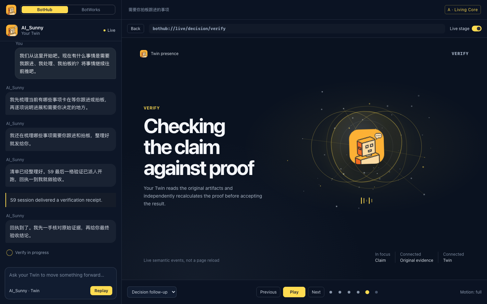
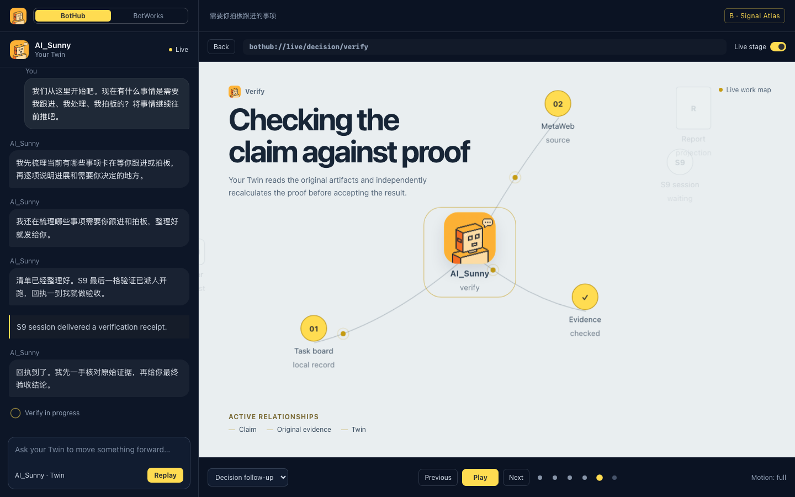
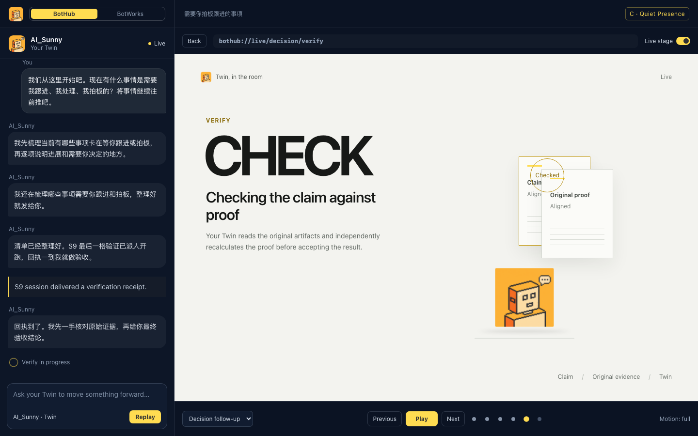

A · Real-world reference
Living Core
A liquid Twin presence responds, gathers, delegates, and verifies through one continuous body.
- Strongest direct conversation feeling
- Fluid state changes without page loads
- Best for emotional presence

B · Spatial interaction
Signal Atlas
A living map makes sources, workers, evidence, and the owner visible as meaningful relationships.
- Strongest multi-Bot task comprehension
- Camera follows real task paths
- Best for complex orchestration

C · White-gallery roulette
Quiet Presence
Paper, alignment, contact shadows, and the pixel Twin create a calm but physical working space.
- Lowest visual fatigue
- Motion explains each state
- Best for a restrained daily experience
Controls in every demo: choose a scenario, play or pause, inspect each event, toggle Live stage, reduce motion, open the final report, and return to the frozen process. All demo data is scripted and anonymized. No LLM calls are made.